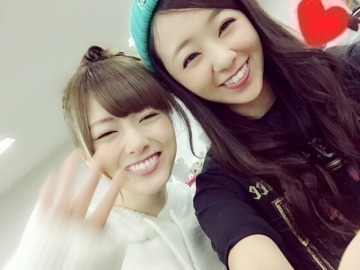
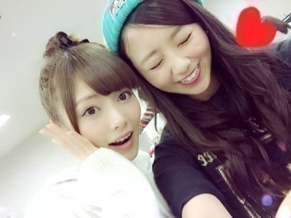
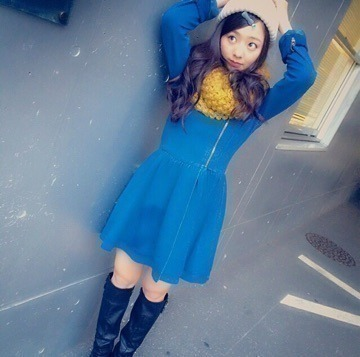
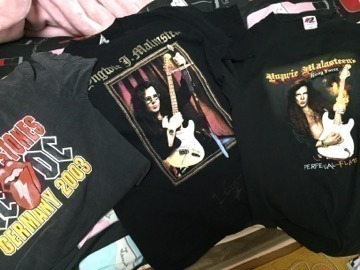
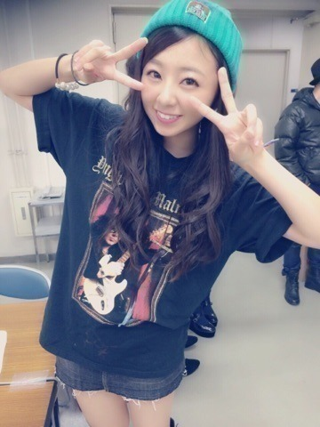
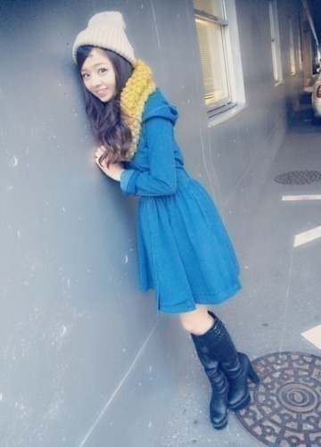

| 2014/11 26 Wed | まに私服、のぎ天ver 。まにorろってぃー |
皆～❤️ おつかれさま.＊
ろってぃーだよ？まにだよ？
大好きなまいやんと いい写真が沢山撮れたよ～（＾ω＾）
けけけ 笑

じろっ。
じろ。
ええ写真や～（＾ω＾）

そーいやblogに書いてなかったんだけど、 先週大阪でLIVEと似顔絵会がありました！！！
来てくれた皆ありがとうね

選抜とアンダーと研究生が混合となって1時間のLIVEをやるってゆう、、、なんだか新鮮でした（＾ν＾）
LIVE会場が、本当にめっちゃ地元だったんで嬉しゅうキモチでした 笑 うぎうぎ。
￣￣￣￣￣￣￣￣￣￣￣￣
そしてそして月曜は握手会やったよ(o^^o)
4部と5部とで 私服はのぎ天dayやったよ。

この洋服 メンバー人気すごいの（＾ω＾）
嬉しゅうきもちです。
ちなみに写真はいつも ジョンソンと撮り合いっこだよ
能条愛未。笑
オスカルとジョンソン仲良いの。笑
5部では、下北沢ロケの時に買ったTシャツを着ました！
ROCK ROCK ROCK★T

普通に デニムスカートとシンプルに。

このグリーンのニット帽はお気に入り（＾ω＾）
帽子 本当に大好きだから、いっぱい家にあるのに 色んなカラーもっともっと欲しい～
 って思っちゃう.＊へへ
って思っちゃう.＊へへ
って思っちゃう.＊へへ
とゆうことで、
～壁を愛する女～第2弾

またね.＊ 大好きだよ？まに。
コメント(243)
2014/11/26 13:18